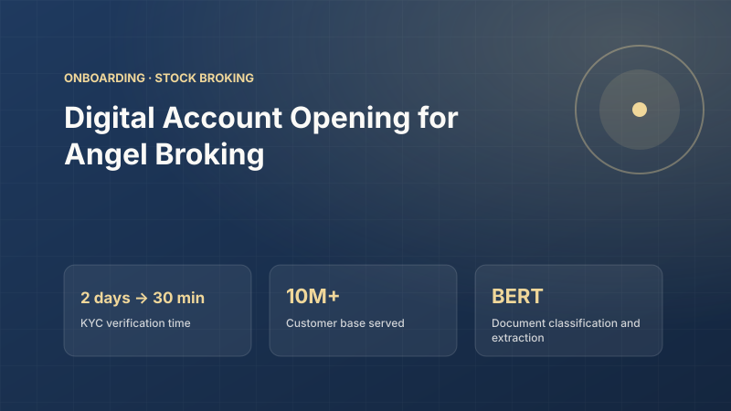

First-time investor
End customerYoung investor opening a first demat account on mobile.
Goals
- Start investing today
Pain points
- Waiting days for approval
- Confusing document rules
Needs: Same-day activation with clear guidance.
Onboarding · Stock Broking
A digital stock-broking onboarding journey with AI-driven KYC verification that cut account activation time from days to minutes.

Overview
Angel Broking was growing fast as new investors entered the market. Opening a trading and demat account needed identity, address, bank and income documents, and manual verification took around two days. Many customers dropped off before their account was active.
Responsibility
From the COO's office, redesigned the account-opening journey and led the automation of KYC: document classification, entity extraction and fraud checks, working with operations, compliance and data science.
Approach
Technology
Customers complete a digital journey and upload documents. Document AI classifies each file and extracts key fields, which are cross-checked against each other and against fraud rules. Clean applications activate automatically and exceptions go to reviewers.
Results
KYC verification time after document AI went live.
Customers could trade the same day instead of waiting.
Reviewers handled only exceptions, not every application.
Employee of the Quarter and Design Lab winner for AI-driven products.
Judgement
AI architecture
A digital journey collects details and documents, document AI classifies and reads every file, automated checks verify and screen for fraud, and clean applications activate without manual review.
Request lifecycle
Component roster
| Component | Responsibility | Guardrail |
|---|---|---|
| Quality checker | Catches unreadable or duplicate uploads | Instant retake prompt |
| Document classifier | Identifies each document type | Confidence threshold |
| Entity extraction | Reads key fields from documents | Cross-document matching |
| Fraud rules | Screens for suspicious applications | Rules owned by compliance |
| Review queue | Handles exceptions | SLA timers and audit log |
Discovery
Research traced where new investors dropped off between sign-up and first trade.
Users
Young investor opening a first demat account on mobile.
Needs: Same-day activation with clear guidance.
Moving from another broker for lower costs.
Needs: A fast, low-effort journey.
Verifies documents manually.
Needs: Automation for clean cases, focus on exceptions.
Accountable for KYC rules.
Needs: A complete audit trail.
Insights to decisions
Most drop-off happened while waiting for verification, not while filling forms.
Product decisionAutomate verification with document AI.
Many rejections were simply blurry or wrong documents.
Product decisionInstant quality checks with retake prompts.
Compliance would only approve automation it could audit.
Product decisionAudit trail designed before launch.